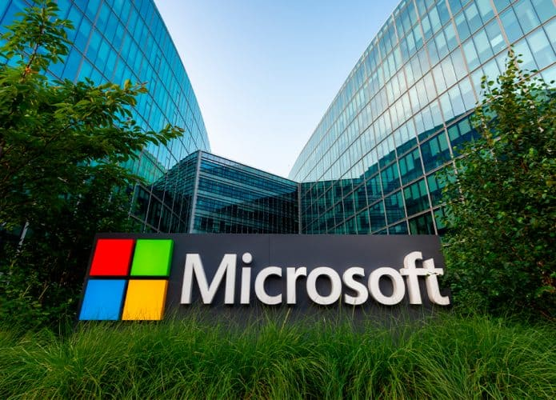
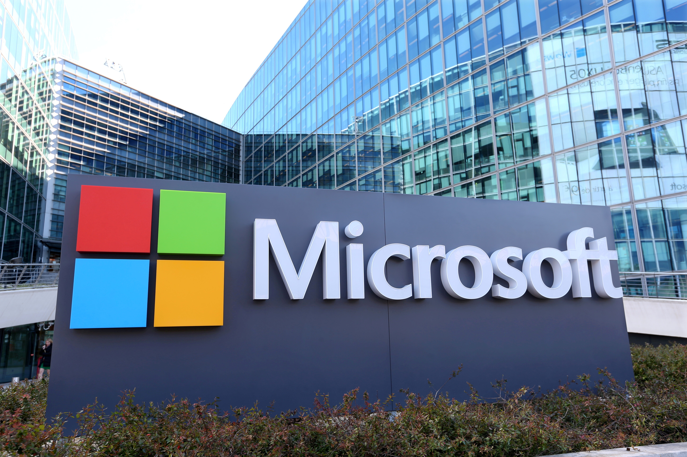
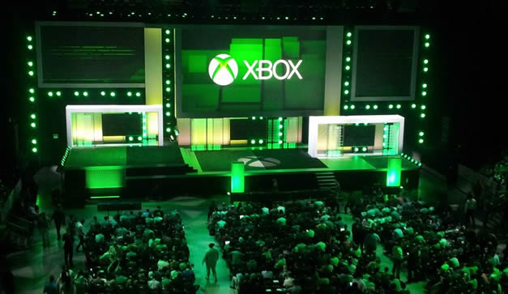
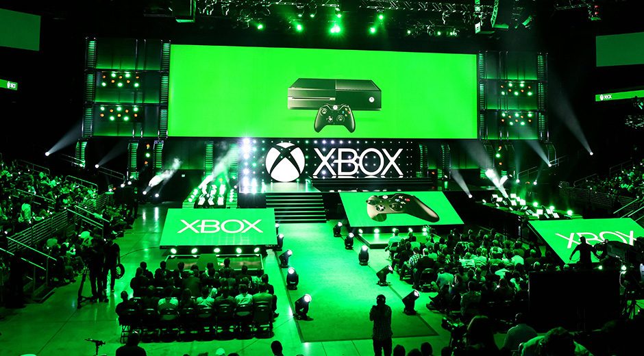
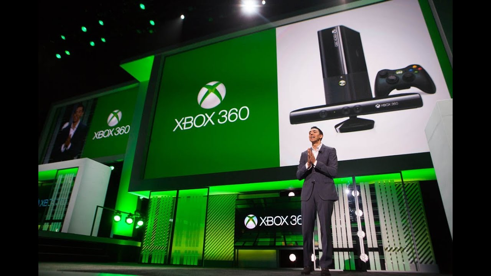

Sobre
Mais do que uma marca de jogos, a Xbox se ergue como uma fortaleza de inovação e comunidade na paisagem digital. É um farol que não se contenta em apenas entreter, mas que busca constantemente expandir os limites da interação e da acessibilidade. Criada pela Microsoft, sua narrativa é a de uma desbravadora que, desde o seu audacioso ingresso, desafiou um império estabelecido, transformando a forma como percebemos o poder de uma plataforma. Sua gênese foi um ato de pura ousadia. O primeiro console não era apenas uma máquina; era uma declaração de guerra contra o status quo. Ao trazer em seu ventre um disco rígido integrado e uma arquitetura poderosa, ele não apenas prometia mundos mais complexos, mas também plantava a semente de uma visão futurista: a do console como um centro de mídia vivo. Foi o primeiro passo para construir não um público, mas uma legião. A consolidação dessa visão revolucionária veio com sua segunda encarnação, que não apenas refinou o poder tecnológico, mas inaugurou os alicerces de um reino digital. Com a criação do Xbox Live, a marca fez algo transcendental: transformou o ato solitário de jogar em uma praça pública global. Ela teceu uma rede social robusta e vibrante, institucionalizando a ideia de comunidade e rivalidade amigável, criando um ecossistema cujo valor não estava apenas no hardware, mas na conexão humana. Este foi o alicerce de seu próprio império, forjado em partidas online e amizades digitais. O terceiro capítulo foi uma lição de resiliência e reinvenção ambiciosa. A marca não apenas lançou um console, mas propôs um ecossistema total. Ao transformar a máquina em um hub de entretenimento unificado, infiltrou-se ainda mais no cotidiano. No entanto, foi com sua filosofia de estúdios e serviços que verdadeiramente dobrou a aposta no futuro, preparando o terreno para uma visão ainda mais ousada. A quarta era representou um amadurecimento estratégico e um retorno triunfante ao protagonismo. Foi um renascimento focado no poder puro e na fluidez, onde a experiência do jogador se tornou soberana. Seus estúdios internos, agora uma constelação de estúdios lendários, foram encarregados de uma missão: oferecer universos narrativos de escala e profundidade incomparáveis. Esta geração não vendeu apenas um aparelho; vendeu um portfólio de mundos, a promessa de viver sagas épicas que são tanto experiências únicas quanto patrimônios culturais compartilhados. Hoje, a fronteira atual da marca é um monumento à dessolução de barreiras. Sua estratégia principal já não é uma caixa sob a TV, mas um conceito: a jogabilidade sem fronteiras. Através do Xbox Game Pass, ela democratizou o acesso, transformando um vasto catálogo de títulos em uma biblioteca pessoal e sempre disponível. A barreira entre console, PC e nuvem se dissolve, e as grandes histórias nascidas em seu ventre tornam-se fenômenos verdadeiramente universais, ressoando em qualquer tela. A Xbox já não construiu apenas um console; ela forjou um ecossistema vivo, um convite permanente para explorar, conectar e jogar, em qualquer lugar, a qualquer hora.
Fotos da empresa





Seamus Blackley
Seamus Blackley estabeleceu-se como o visionário por trás da ousada incursão da Microsoft no mundo dos consoles. Físico e desenvolvedor talentoso, sua expertise em simulações para jogos como Flight Unlimited mostrou sua capacidade única de unir ciência e entretenimento. Na virada do milênio, Blackley concebeu o projeto quase herético que se tornaria o Xbox. Sua ideia fundamental era um "Windows DirectX em uma caixa" - um console que aproveitaria a arquitetura familiar do PC para atrair desenvolvedores. Sua paixão por games e sua visão estratégica foram cruciais para convencer a Microsoft a entrar na competição contra Sony e Nintendo. Como evangelista do projeto, Blackley defendia um console com disco rígido integrado, focado em experiências conectadas e poder bruto. Embora tenha deixado o projeto antes do lançamento, sua filosofia central permanece como DNA do Xbox: uma plataforma poderosa e orientada para jogadores, que transformou para sempre o panorama dos games.